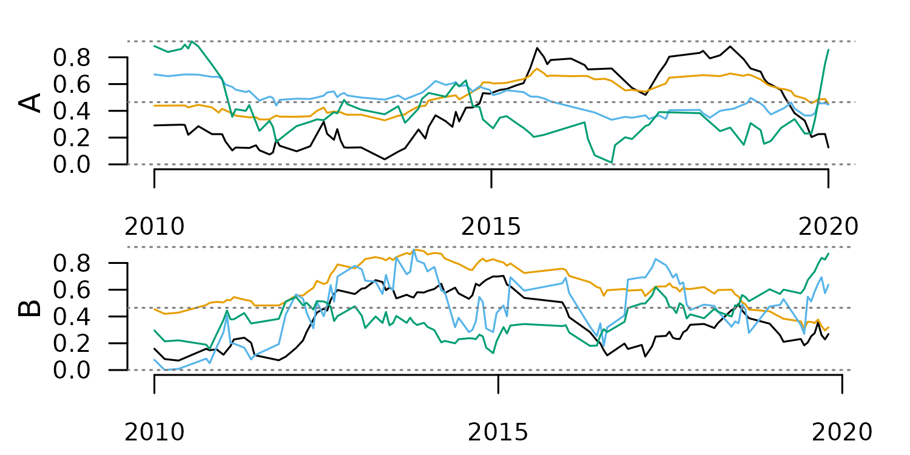

Summary
The R package distantia 2.0 introduces Time Series Lists
as working unit for dissimilarity analyses, and provides a complete
toolset to manages them.
This article describes Time Series Lists in detail, and showcases the most common data handling procedures enabled by the new functions included in the package.
Introduction to Time Series Lists
In this new version of distantia, groups of time series
are organized as named lists of zoo
objects. These lists are named Time Series Lists (TSL)
within the package, and are designed to facilitate the parallelization
of dissimilarity analyses.
TSL is not a class by choice, as the idea is keeping them as simple as possible to grant users the autonomy to create or modify them as needed.
Zoo Time Series
The R package zoo provides an S3 class of the same name
designed to handle observations ordered by an index. It supports various
index classes, such as Date, POSIXct, or even custom numeric or
character indices, and handles regular and irregular time series equally
well.
Other advantages of using zoo objects include a seamless intergration with base R methods, and built-in tools for alignment, merging, and subsetting.
Let’s take a look at a little zoo object.
library(distantia)
z <- zoo_simulate(
name = "my_zoo",
cols = 3,
rows = 10,
time_range = c(
"2024-01-01",
"2024-12-31"
),
na_fraction = 0.1,
irregular = TRUE,
seed = 1
)
zoo_plot(x = z)
Zoo objects have two main components, a data matrix with the time series observations, and an index representing time or sample order.
The data matrix is extracted with zoo::coredata().
zoo::coredata(z)
#> a b c
#> 2024-01-01 0.2766156 NA 0.4311940
#> 2024-01-20 0.2757911 0.2576964 0.5035254
#> 2024-02-08 0.6195721 0.6088013 0.7032048
#> 2024-02-27 0.7287392 0.7720906 0.8115532
#> 2024-04-25 0.6145089 0.6955610 0.6016670
#> 2024-07-11 0.4504343 0.3641707 0.2375049
#> 2024-08-18 NA NA 0.2669233
#> 2024-09-06 0.3662741 0.3615319 0.2490074
#> 2024-11-03 0.3074425 0.3016022 0.4022756
#> 2024-12-11 0.3435016 0.1728781 0.3047951
#> attr(,"name")
#> [1] "my_zoo"
class(zoo::coredata(z))
#> [1] "matrix" "array"The core data of a zoo object can also be a vector when the time series is univariate.
However, this is frowned upon in
distantia, and these vectors should always be converted to
matrices.
x <- distantia::zoo_vector_to_matrix(x = x)
is.vector(zoo::coredata(x))
#> [1] FALSE
is.matrix(zoo::coredata(x))
#> [1] TRUEThe index of zoo time series is extracted with
zoo::index().
zoo::index(z)
#> [1] "2024-01-01" "2024-01-20" "2024-02-08" "2024-02-27" "2024-04-25"
#> [6] "2024-07-11" "2024-08-18" "2024-09-06" "2024-11-03" "2024-12-11"
class(zoo::index(z))
#> [1] "Date"The classes for zoo indices explicitly supported in
distantia are Date, POSIXct, and
numeric. The function distantia::zoo_time()
helps summarize the time features of a zoo object
distantia::zoo_time(x = z)
#> name rows class units length resolution begin end
#> 1 my_zoo 10 Date days 345.7895 38.42105 2024-01-01 2024-12-11
#> keywords
#> 1 years, q....Additionally, in distantia all zoo objects are expected
to have the attribute name.
attributes(z)$name
#> [1] "my_zoo"This attribute is used to facilitate plotting operations, and it is
managed internally by tsl_...() functions. There are
several functions in distantia to manage the names of zoo
objects.
#reset zoo name
z <- distantia::zoo_name_set(
x = z,
name = "My_Zoo"
)
#get zoo name
distantia::zoo_name_get(x = z)
#> [1] "My_Zoo"
#clean zoo name
z <- distantia::zoo_name_clean(
x = z,
lowercase = TRUE
)
distantia::zoo_name_get(x = z)
#> [1] "my_zoo"Time Series Lists
TSLs are named lists of zoo time series. The example below shows how to build a TSL from scratch with zoo objects. But this is not the most common or comfortable case, so please, visit the section Creating TSLs to learn how to convert your data easily to TSL.
#create simple tsl
my_tsl <- list(
A = zoo_simulate(
cols = 4,
na_fraction = 0.2
),
B = zoo_simulate()
)
names(my_tsl)
#> [1] "A" "B"
class(my_tsl)
#> [1] "list"
#names of the zoo objects
lapply(X = my_tsl, FUN = distantia::zoo_name_get)
#> $A
#> [1] "A"
#>
#> $B
#> [1] "A"
#class of the objects within the list
lapply(X = my_tsl, FUN = class)
#> $A
#> [1] "zoo"
#>
#> $B
#> [1] "zoo"TSLs ready for dissimilarity analyses must follow several rules:
- The elements of the list or the zoo objects must be named.
- Time series names cannot be duplicated.
- The coredata of all zoo objects must be of class
matrix. - There cannot be NA, Inf, or NaN in the zoo objects.
- All zoo columns must be named.
- All zoo columns must be numeric.
- All zoo objects within the TSL must share at least one column name.
- The index of the zoo objects must be of the same class.
These are many rules, I know, but the functions
tsl_diagnose() and tsl_repair() are there to
help you forget about them.
When applying tsl_diagnose() to my_tsl we
can see it has several issues.
my_tsl <- distantia::tsl_diagnose(tsl = my_tsl)
#> distantia::tsl_diagnose(): Structural issues:
#> -------------------------------------------
#>
#> - list and time series names must match and be unique: reset names with distantia::tsl_names_set().
#>
#>
#> Value-related issues:
#> -------------------------
#>
#> - there are NA, Inf, -Inf, or NaN cases in the time series: interpolate or remove them with distantia::tsl_handle_NA().From there, we can either follow the suggestions, or apply
tsl_repair() directly, as done below.
my_tsl <- distantia::tsl_repair(tsl = my_tsl)
#> distantia::ts_repair(): Structural repairs:
#> --------------------------
#>
#> - fixed naming issues.
#>
#> - removed exclusive columns not shared across time series.
#>
#>
#> Value-related repairs:
#> --------------------------
#>
#> - interpolated NA cases in zoo objects with distantia::tsl_handle_NA().This function identifies the issues raised up by
tsl_diagnose() and repairs them when possible.
If we run tsl_diagnose() again, all checks should be
ok.
my_tsl <- distantia::tsl_diagnose(
tsl = my_tsl
)From this point, our TSL is ready to go!
distantia::tsl_plot(
tsl = my_tsl
)
Creating Time Series List
The function tsl_initialize() (with the alias
tsl_init()) is designed to help transform several data
structures to Time Series List.
Long Data Frame to TSL
Long and tidy data frames are convenient structures to store
multivariate time series of a reasonable size. For example, the data
frame fagus_dynamics shown below has the column “name”
identifying separate time series, the column “time” with observation
dates, and three numeric columns with environmental observations.
head(fagus_dynamics)
#> name time evi rainfall temperature
#> 1 Spain 2001-01-01 0.1929 199.8 8.1
#> 5 Spain 2001-02-01 0.2423 50.6 7.8
#> 6 Spain 2001-03-01 0.2761 170.9 11.0
#> 7 Spain 2001-04-01 0.3961 62.7 10.4
#> 8 Spain 2001-05-01 0.4445 52.7 14.1
#> 9 Spain 2001-06-01 0.6434 23.1 17.6Transforming this data frame to TSL is quite straightforward:
tsl <- tsl_initialize(
x = fagus_dynamics,
name_column = "name",
time_column = "time"
)
#even shorter!
tsl <- tsl_init(
x = fagus_dynamics,
name = "name",
time = "time"
)
tsl_plot(
tsl = tsl
)
Once manipulated and/or analyzed, a TSL can be converted back to data
frame with tsl_to_df().
df <- tsl_to_df(tsl = tsl)
head(df)
#> name time evi rainfall temperature
#> 1 Germany 2001-01-01 0.3539 68.6 2.1
#> 2 Germany 2001-02-01 0.2940 56.6 3.8
#> 3 Germany 2001-03-01 0.3453 128.2 6.8
#> 4 Germany 2001-04-01 0.3924 82.5 8.2
#> 5 Germany 2001-05-01 0.6880 32.7 15.9
#> 6 Germany 2001-06-01 0.6837 70.8 16.0Wide Data Frame to TSL
A wide data frame is a useful structure to store univariate time series observed in different places at the same times.
head(evi_wide)
#> time evi_Spain evi_Germany evi_Sweden
#> 1 2001-01-01 0.1929 0.3539 0.1827
#> 5 2001-02-01 0.2423 0.2940 0.1819
#> 6 2001-03-01 0.2761 0.3453 0.2155
#> 7 2001-04-01 0.3961 0.3924 0.2369
#> 8 2001-05-01 0.4445 0.6880 0.5192
#> 9 2001-06-01 0.6434 0.6837 0.5917When no name_column is provided,
tsl_initialize() assumes that the time series are coded as
separate columns.
tsl <- tsl_initialize(
x = evi_wide,
time_column = "time"
)
tsl_plot(
tsl = tsl
)In this case, the column names of the univariate zoo objects will have the same name (“x”).
tsl_colnames_get(tsl = tsl)
#> $evi_Spain
#> [1] "x"
#>
#> $evi_Germany
#> [1] "x"
#>
#> $evi_Sweden
#> [1] "x"This name can be reset as needed with
tsl_colnames_set().
tsl <- tsl_colnames_set(
tsl = tsl,
names = "evi"
)
tsl_colnames_get(tsl = tsl)
#> $evi_Spain
#> [1] "evi"
#>
#> $evi_Germany
#> [1] "evi"
#>
#> $evi_Sweden
#> [1] "evi"This TSL can be converted to data frame, but this time the result comes in long format.